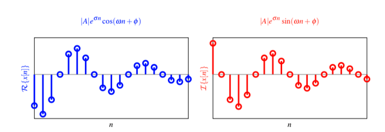

2. 时域中的离散时间信号和系统¶
离散时间信号最基本的形式是定义在等间隔的时间离散值上，且在这些离散时间上的信号振幅值是连续的。离散时间系统则是输入为离散时间信号输出也是离散时间信号的系统。对于线性时不变（LTI）系统来说，我们可以发现LTI系统与该系统的冲激响应序列是完全等价的。因此在线性时不变条件下（大多数实际系统都能近似为LTI的），离散时间信号与离散时间系统实际是一致的，他们最后都是落脚于研究序列的时域和频域性质。
那么，本章我们将首先介绍离散时间信号和系统在时域中的表示方法和基本性质。同时，本书仅仅考虑LTI离散时间系统，例如后续章节中介绍的数字滤波器包括有限长和无限长冲激响应数字滤波器，所以离散时间信号和系统可以无差别对待。也就是说，序列（系统）的某些性质，同样适用于系统（序列），例如能量信号对应于稳定系统条件、信号的频率分析对应于系统的频谱响应。
2.1. 离散时间信号¶
一般来说，离散时间信号可以通过对连续时间信号抽样来得到，
其中，$T_s$表示抽样间隔。
实际生活中存在很多离散时间信号的例子，比如天气预报的结果，气温值在一天中每隔一个小时一次的预报就是一个典型的离散时间信号的例子。
当然，我们也可以通过软件仿真出离散时间信号，例如在Matlab中执行
xn = randn(10,1);
就能产生一个随机离散时间信号，长度为10。
上一章节中，我们也提到过，离散时间信号实际上包含两种形式：一种是抽样数据信号，其样本值是连续的；另一种是数字信号，其样本值是离散的。实际的数字信号处理系统所处理的信号都会采用舍入或者截断对样本值量化得到数字信号。对连续信号进行数字处理时，连续时间信号先后通过抽样保持电路和模数转换器得到其等效数字信号。期间对振幅的量化误差的影响，我们也将在最后一章介绍。
2.1.1. 离散时间信号的时域表示¶
在数字信号处理中，信号可以用数字序列来表示，该序列称为样本。例如，
离散时间信号$x[n]$就表示序列${x[n]}$在时刻$n$的振幅，而带有下划线（或者箭头标示）的样本点默认为$n=0$时刻的样本点$x[0]$。以此类推，这样我们就能定义$x[1], x[-1], x[2]…$，等等。
出了通过数字序列来表示以外，离散时间信号还可以表示为一个矢量的形式，例如
就定义了一个长度为$N$的离散时间信号，$\mathbb{R}^N$表示一个$N$维的实数域欧氏空间。
当然，对于长度无限的离散时间信号，我们也可以通过矢量来表示，只不过此时信号$\mathbf{x}$不在属于欧氏空间。为了研究这一类问题，则有必要引入希尔伯特空间的概念，感兴趣的同学可以参考下面这一本教科书。
[1] Vetterli, M., Kovačević, J., & Goyal, V. K. (2014). Foundations of signal processing. Cambridge University Press.
定义单位抽样序列为$\delta[n]$,
它表示的物理含义很明确，就是一个抽样器，表示当$n=0$时刻抽出一个样本值。那么同理，$\delta[n-1]$就表示当$n=1$时刻抽出一个样本值。那么，对于任意一个序列$x[n]$，我们都可以通过这个单位抽样序列来表示
这个公式可以通过下面的这幅图来理解：
上面介绍是三种比较通用的离散时间信号的表示方法，同样对于某些具有显式表达式的离散时间信号，我们可以直接用它们的表达式来表示，例如
而关于如何利用Matlab工具或者Python工具来表示离散时间信号，同学们可以在实验内容中查看相关内容。
2.1.2. 基本序列¶
本节将介绍下面几种基本序列：单位抽样序列、单位阶跃序列、指数衰减序列、窗序列和正弦序列。
单位抽样序列¶
定义单位抽样序列为$\delta[n]$,
通过如下Matlab代码可以生成一个单位抽样序列。
% Generation of a Unit Sample Sequence
clf;
% Generate a vector from -10 to 20
n = -10:20;
% Generate the unit sample sequence
u = [zeros(1,10) 1 zeros(1,20)];
% Plot the unit sample sequence
stem(n,u);
xlabel('Time index n');ylabel('Amplitude');
title('Unit Sample Sequence');
axis([-10 20 0 1.2]);
单位阶跃序列¶
定义单位抽样序列为$\mu[n]$,
单位样本序列和单位阶跃序列之间的关系如下：
注解
上述第一个公式中的第二个等号成立的原因是 $$ \mu[n] = \mu[n-1]+\delta[n] = \mu[n-2] + \delta [n-1] + \delta[n] = \dots $$
$$ \mu[n] = \mu[n-\infty] + \delta[n-\infty+1] \dots + \delta [n-1] + \delta[n] = \sum_{m=-\infty}^n \delta[k] $$
阶跃序列通常被用来将非因果序列转换成因果序列。
因果指数衰减序列¶
指数衰减序列可以用来描述很多实际的物理现象，例如热方程的解、RC电路的放电过程等等。
当衰减参数$\alpha$为复数，且幅度小于1时，信号$x[n]$不仅幅度会衰减，还会出现周期震荡现象，参考实验。
窗序列¶

窗序列可以将一个无限长序列$h[n]$转换成有限长序列
那么最终得到的序列$x[n]$长度就等于$N_2-N_1+1$。
正弦序列¶
其中，$\omega$为离散时间信号的归一化角频率，单位是弧度每样本，$\phi$是相位，$A$是幅度值。
前面我们已经介绍了离散时间信号通常是通过对连续时间信号$x_a(t)$均匀采样得到的，这两个信号之间的关系为 $$ x[n] = x_a(nT_s) $$ 其中，$T_s$为采样周期。而且，连续时间信号的时间变量$t$与离散时间信号的时间变量$n$只在离散时刻$t_n$相关联，且关系为 $$ t_n = nT_s = \frac{n}{F_s} = \frac{2\pi n}{\Omega_s} $$ 其中$F_s=1/T_s$为抽样频率，而$\Omega_s=2\pi F_s$表示抽样角频率。
若连续时间信号为 $$ x_a(t) = A\cos (2\pi f_0 t +\phi) = A\cos(\Omega_0 t + \phi) $$ 则响应的离散时间信号就是本节开头定义的正弦序列$x[n]$。很容易，我们可以得到如下关系 $$ \omega = \frac{2\pi\Omega_0}{\Omega_s} = \Omega_0 T_s $$ 而$\omega$为离散时间信号的归一化角频率，单位是弧度每样本。
连续时间信号的角频率$\Omega_0$的单位是弧度每秒。
注解
连续的正弦信号$x_a(t)$肯定是周期信号，但是抽样之后的正弦序列不一定就是周期序列。例如
$$ x[n] = cos(0.2 n) $$ 该序列肯定不是周期序列。
我们可以很容易证明，只有当正弦序列的归一化角频率$\omega$满足如下条件时，该序列才是周期的 $$ \exists m, k \in \mathbb{Z}\backslash {0}, \mbox{ s.t. } m\omega =k \pi $$
注解
两个不同频率的连续正弦信号抽样可能会得到相同的较低频率的正弦序列，这种现象称为混叠。
我们可以很容易证明下列连续时间正弦信号族 $$ x_{a,k}(t)=A\cos(\Omega_0+k\Omega_s)t+\phi), \quad k\in \mathbb{Z} $$ 通过频率为$\Omega_s$抽样之后，能产生相同的抽样信号
同样的，我们也可以证明当$\omega_2=\omega_1+2\pi k$时，下面两个序列是相等的
注解
离散时间信号的归一化角频率$\omega$是不是越大，频率越高？通过上面的公式，我们也可以总结出，离散时间正弦序列的频率并不是一直增大。由于离散化（等间隔抽样）的处理，离散时间信号会随着$\omega$的增大，其振荡频率会周期变化。而且可以发现，正弦序列的归一化角频率在$\pi$的奇数倍附近频率较高，而在$\pi$的偶数倍附近频率较低。一般来说，我们定义$[-\pi,\pi]$内为基本周期。
复正弦序列¶
定义复正弦序列为
根据欧拉公式，
那么
因此，我们可以将任意复数写成$A = |A| e^{j\phi}$，其中$|A|$表示复数$A$的幅度，$\phi$表示相位。而$\alpha$记作 $$ \alpha = e^{\sigma+j\omega} $$
最后，可以得到该复正弦序列的实部为衰减的余弦序列， $$ x_r[n] = |A|e^{\sigma n} \cos(\omega n + \phi) $$ 虚部也是衰减的正弦序列 $$ x_i[n] = |A|e^{\sigma n} \sin(\omega n + \phi) $$ 
复指数（复正弦）序列的Matlab生成算法可以参考实验部分。
2.1.3. 离散时间信号的分类¶
根据序列的长度，可以将序列分为有限长序列和无限长序列。对于无限长序列，还可以分为左边序列和右边序列。
根据序列的周期性，可以将序列分为周期序列和非周期序列。周期序列满足 $$ x[n]= x[n+kN], \forall n,k\in \mathbb{Z} $$ 且称满足上述公式的最小正整数$N$为该序列的周期。
针对实数序列，根据序列的对称性，可以将序列分为奇对称序列和偶对称序列
同时，对于任意实数序列$x[n]$，我们都可以将该序列通过如下方式分解成奇对称部分 $$ x_o[n] = \frac{1}{2}(x[n]-x[-n]) $$ 和偶对称部分 $$ x_e[n] = \frac{1}{2}(x[n]+x[-n]) $$ 很容易可以验证： $$ x[n] = x_o[n] + x_e[n] $$